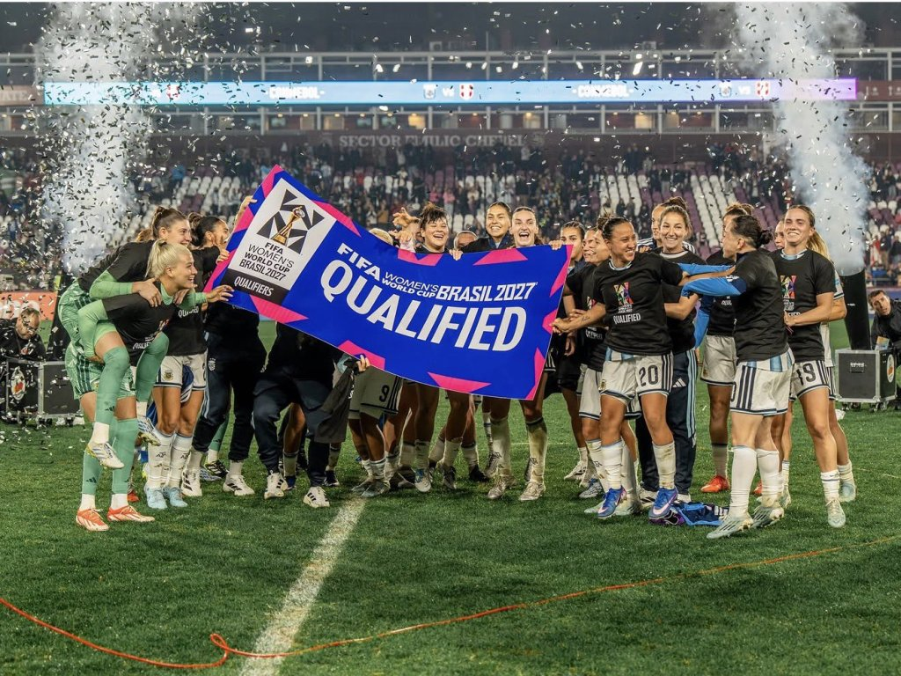
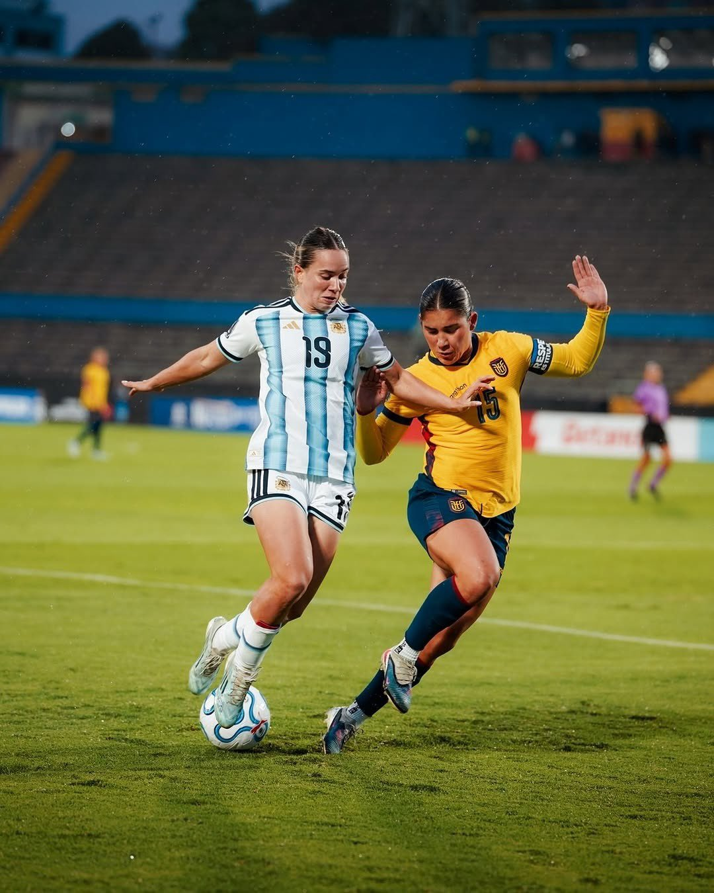
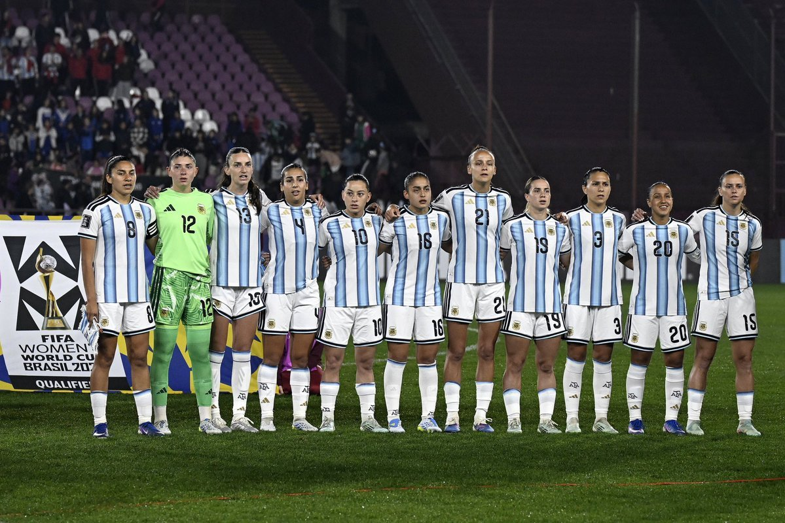
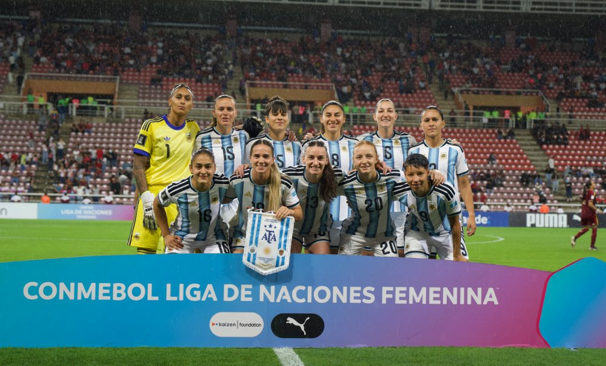
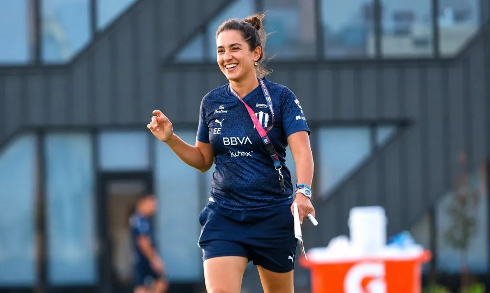
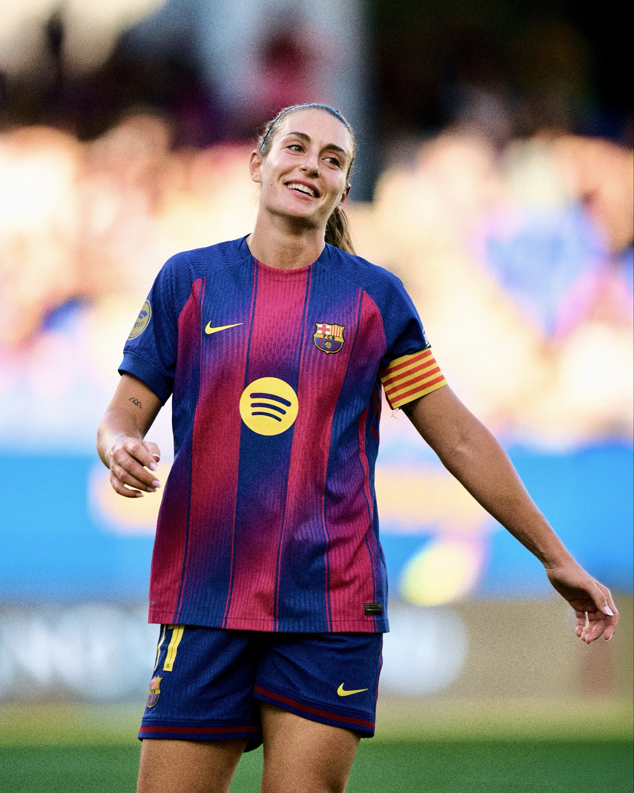
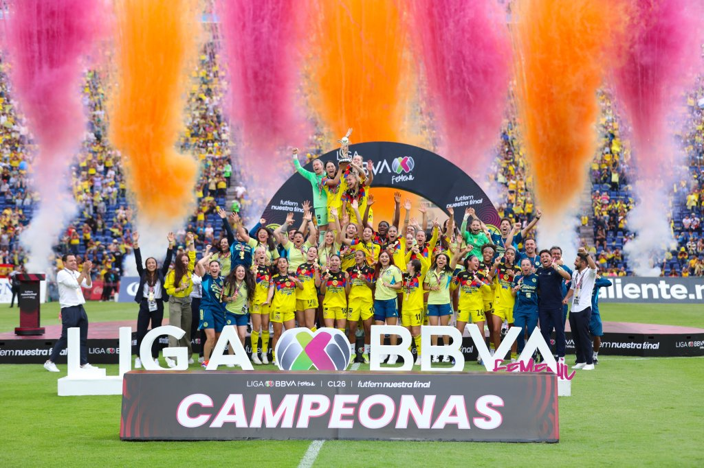
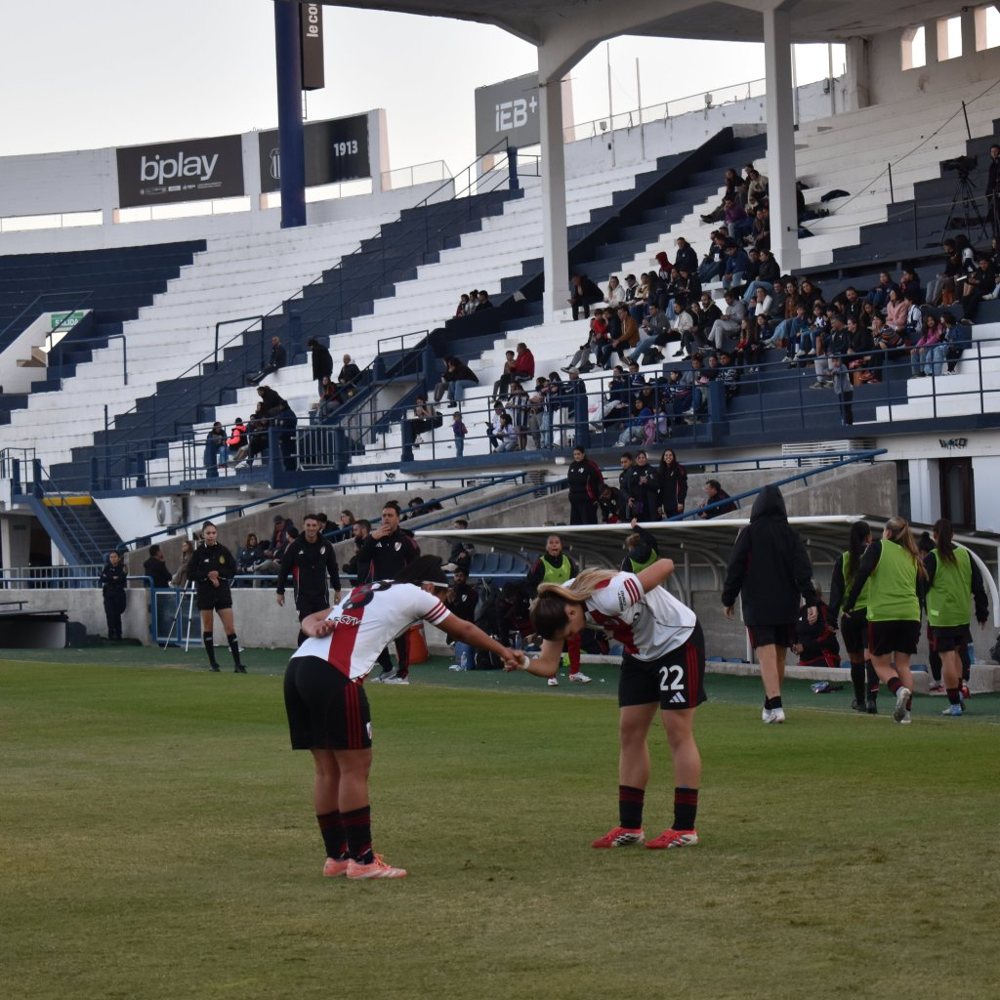
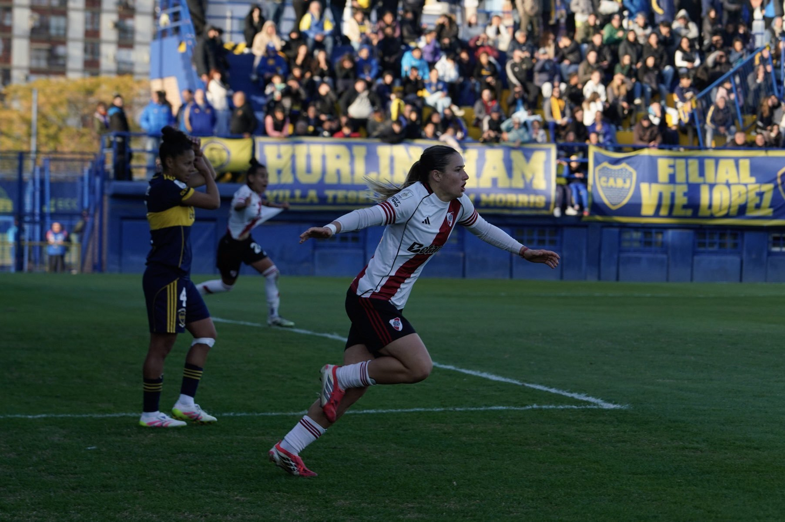

Argentina clasificó al Mundial Femenino Brasil 2027: el gol fue de Mercedes Diz
6 de junio de 2026
La Selección empató 1-1 ante Perú en Lanús. El gol fue de Mercedes Diz, de 17 años. Es la tercera participación mundialista consecutiva de la Albiceleste, la primera vez en la historia.

Argentina empató 1-1 ante Perú en el Estadio Ciudad de Lanús y con ese resultado aseguró su lugar en la Copa del Mundo Femenina de Brasil 2027. El gol llegó a los 75 minutos de la mano de Mercedes Diz, de 17 años, que convirtió para poner el 1-0. Pero Cherrie Cox empató para Perú a cinco minutos del final y el partido se cerró en tablas.
El empate fue suficiente. Argentina llega a Brasil 2027 de manera directa, como una de las dos primeras selecciones de la CONMEBOL Liga de Naciones Femenina, y lo hace por tercera vez consecutiva, algo que nunca había logrado en la historia.
El partido tuvo también expulsiones: Catalina Roggerone para Argentina y Alesia García para Perú, por lo que ambos equipos afrontaron el tramo final con diez jugadoras.
Mercedes Diz, 17 años y un gol histórico
La figura de la noche fue Mercedes Diz. La delantera de River Plate venía siendo una de las jugadoras más destacadas del Torneo Apertura y en la Selección Mayor demostró que su nivel no tiene techo. Con solo 17 años marcó el gol que clasificó a Argentina al Mundial. Su nombre queda grabado en la historia del fútbol femenino argentino.
Las palabras de Portanova
Germán Portanova habló con emoción después del partido. "Me emociona pensar en el recorrido. Aunque no lo crean, fue muy difícil. Es un país muy futbolero que está acostumbrado al triunfo, pero en el femenino estamos en un proceso de crecimiento constante", dijo el entrenador.
La clasificación llega además en un contexto histórico para el fútbol femenino argentino en todas sus categorías. La Sub 17 clasificó por primera vez en la historia a un Mundial y la Sub 20 también aseguró su lugar en el Mundial de Polonia. Tres selecciones, tres mundiales al mismo tiempo.
Fuente: AFA — CONMEBOL — femeninoinfo
Seguir leyendo

Argentina es subcampeona de la Liga de Naciones

Argentina vs Ecuador: hoy a las 20 por el título

Argentina vs Perú: tres estadios en menos de un mes

Eva Espejo es la nueva DT de Ecuador

Alexia Putellas deja el Barcelona tras 14 temporadas

La Liga MX Femenil es la más vista del mundo

River lidera el Apertura 2026 con 20 puntos

River venció 1-0 a Boca en el Superclásico